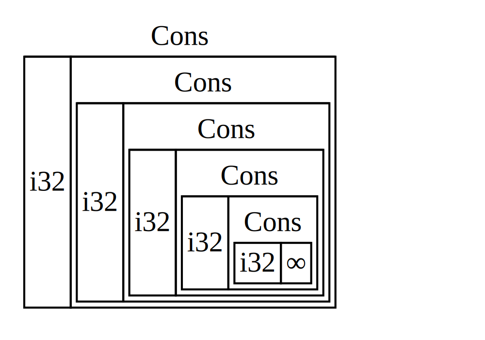

Тип данных Box<T> ссылается на данные в куче и имеет известный размер
Самый простой (очевидный) умный указатель это (коробка) box (Box<T>).
Коробки позволяют вам поместить одно знание в кучу (мы уже упоминали о том, что
такое куча в Главе 4). Код 15-1 показывает как можно использовать коробку для хранения
значения типа i32 в куче
Filename: src/main.rs
fn main() { let b = Box::new(5); println!("b = {}", b); }
Код 15-1: сохранение значения i32 типа в куче используя
коробку
Результатом будет печать строки b = 5. В этом случае, мы можем получить доступ
к данным в коробке, как если бы эти данные были в стеке. Как любое значение, которое
владеет данными, когда коробка выходит станет находиться за областью работу программы,
как b после отработки функцией main всех команд, она станет недействительной.
Недействительными будут и коробка (контейнер данных, данные о котором находятся в
стеке) и данные.
Конечно, хранение единственного значения в куче неудобно. Обычно такое решение применяется крайне редко. Использование коробки наиболее удобно тогда, когда необходимо точно знать размер типа хранимого типа данных. Например, в коде 15-2, в котором содержится определение перечисления для списка недостатков (cons list) тип структуры данных взят из функционального программирования. Обратите внимание, что такой код не скомпилируется:
Filename: src/main.rs
enum List {
Cons(i32, List),
Nil,
}
код 15-2: первая попытка определения перечисления для представления
списка недостатков с данными типа i32
Мы реализуем список недостатков, которые хранят только значения типа i32. Мы также
можем выбрать реализацию списка недостатков независимого от типа значений с помощью
обобщенных типов данных (дженериков), которые мы обсуждали в Главе 10.
Подробнее о списке недостатков
Список недостатков cons list* - это структура данных, которая пришла из языка программирования Lisp и его диалектов. В Lisp, функция
cons(сокращение от “construct function” функции-конструктора) создаёт новый список используя два аргумента, один из которых значение, а другое список.Концепция такого шаблонного решения пришла из функционального программирования
Список создаётся путём рекурсивного вызова функции
cons. Каноническое имя для обозначения базового случая рекурсии - «Nil», которое обозначает окончание списка. Обратите внимание, что это значение не является тем же что и “null” или “nil” в Главе 6. Это недействительное или отсутствующе значение.
Этот специальный список содержит и значение и ссылку остаток списка в этой точке.
Остатки списка определены по вложенным спискам. Конец списка обозначается значением
Nil. Cons-списки не используются очень часто в Rust; Vec <T> обычно является
лучшим выбором. Реализация этой структуры данных является хорошим примером ситуации,
когда Box <T> полезен. Давайте узнаем, почему!
Для того, чтобы сохранить список значений 1, 2, 3, используя cons-список, напишем
следующий код:
use List::{Cons, Nil};
fn main() {
let list = Cons(1, Cons(2, Cons(3, Nil)));
}
Первое Cons-значение хранит 1 и другой список как значение. Это список содержит
значение 2 и другой список. Этот список содержит значение 3 и Nil- сигнал, что
список завершён.
Пытаемся скомпилировать данный код 15-3:
error[E0072]: recursive type `List` has infinite size
-->
|
1 | enum List {
| ^^^^^^^^^ recursive type has infinite size
2 | Cons(i32, List),
| --------------- recursive without indirection
|
= help: insert indirection (e.g., a `Box`, `Rc`, or `&`) at some point to
make `List` representable
код 15-3: ошибка. Попытка определить бесконечное рекурсивное перечисление
Описание ошибки сообщает, что тип имеет бесконечный размер. Почему? Т.к. мы
определили, что List имеет рекурсивное значение самого себя. Это значит, что
Rust не может вычислить размер памяти, который надо выделить значению списка.
Для решения этой задачи, сначала надо понять, как компилятор определяет сколько
памяти необходимо для хранения не рекурсивного типа. Вспомним определение перечисления
Message из примера 6-2:
# #![allow(unused_variables)] #fn main() { enum Message { Quit, Move { x: i32, y: i32 }, Write(String), ChangeColor(i32, i32, i32), } #}
Когда компилятору необходимо знать сколько ему необходимо памяти для значения перечисления
Message, он может пройтись по порядку по его значениям. Для Message::Quit не
надо памяти. Message::Move необходимо место для хранения двух значений типа i32.
И так далее. Таким образом, наибольшее количество памяти, которое понадобится для
хранения одного элемента - это наибольшее значение этого его значения перечисления.
Теперь можно понять, почему применяя данный алгоритм вычисления размера в рекурсивных типах происходят ошибки (15-4).

вид 15-4: бесконечный List содержит бесконечное значение
Cons variants
Поэтому компилятор выдаёт ошибку (он не может понять, сколь же памяти нужно выделить данному типу). Компилятор в этом случает даёт полезную рекомендацию:
= help: insert indirection (e.g., a `Box`, `Rc`, or `&`) at some point to
make `List` representable
Т.к. Box<T> является ссылкой, мы всегда знаем её размер: ссылка всегда имеет
размер usize. Значения usize будет являться адресом в куче. Куча может быть
любого размера, но адрес начала данных всегда будет кратен usize. Мы исправим
ошибку, сделав изменения в коде нашего примера:
Filename: src/main.rs
enum List { Cons(i32, Box<List>), Nil, } use List::{Cons, Nil}; fn main() { let list = Cons(1, Box::new(Cons(2, Box::new(Cons(3, Box::new(Nil)))))); }
код 15-5: определение List, который использует Box<T>
для определения размера для хранения типа
Теперь компилятор может рассчитать размер типов. В этом ошибок не будет. Теперь Cons
выглядит следующим образом:

вид 15-6: List, который имеет определенный размер
Это основная сфера использования коробок - решение вопроса с рекурсивными данными. Мы ещё рассмотрим ещё один аспект, где Rust использует данные неизвестного заранее размера (в Главе 17). Когда будем обсуждать объектные типажи.
Хотя вы ещё не использовали коробки очень часто, они - хороший способ понять, что
же такое умные указатели. Два аспекта, которые имеют умные указатели - это реализация
типажей Deref и Drop. Рассмотрим, как эти типажи работают и как умные указатели
их используют.